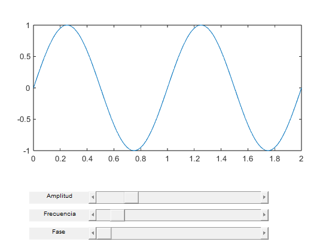

amplitud = 1;
frecuencia = 1;
fase = 0;
fs = 100;
t = 0:1/fs:2;
figure('Name', 'Función Seno con Sliders', 'NumberTitle', 'off');
ax = axes('Position', [0.1, 0.4, 0.8, 0.5]);
grid on;
xlabel('Tiempo (s)');
ylabel('Amplitud');
title('Función Seno');
y = amplitud * sin(2 * pi * frecuencia * t + fase);
plotHandle = plot(t, y);
uicontrol('Style', 'text', 'Position', [50, 80, 100, 20], 'String', 'Amplitud');
sliderAmplitud = uicontrol('Style', 'slider', 'Min', 0.1, 'Max', 5, 'Value', amplitud, ...
'Position', [150, 80, 300, 20], 'Callback', @actualizarGrafica);
uicontrol('Style', 'text', 'Position', [50, 50, 100, 20], 'String', 'Frecuencia');
sliderFrecuencia = uicontrol('Style', 'slider', 'Min', 0.1, 'Max', 10, 'Value', frecuencia, ...
'Position', [150, 50, 300, 20], 'Callback', @actualizarGrafica);
uicontrol('Style', 'text', 'Position', [50, 20, 100, 20], 'String', 'Fase');
sliderFase = uicontrol('Style', 'slider', 'Min', 0, 'Max', 2*pi, 'Value', fase, ...
'Position', [150, 20, 300, 20], 'Callback', @actualizarGrafica);
function actualizarGrafica(~, ~, sliders, plotHandle, t)
amplitud = get(sliders.sliderAmplitud, 'Value');
frecuencia = get(sliders.sliderFrecuencia, 'Value');
fase = get(sliders.sliderFase, 'Value');
y = amplitud * sin(2 * pi * frecuencia * t + fase);
set(plotHandle, 'YData', y);
end
sliders.sliderAmplitud = sliderAmplitud;
sliders.sliderFrecuencia = sliderFrecuencia;
sliders.sliderFase = sliderFase;
set(sliderAmplitud, 'Callback', @(src, event) actualizarGrafica(src, event, sliders, plotHandle, t));
set(sliderFrecuencia, 'Callback', @(src, event) actualizarGrafica(src, event, sliders, plotHandle, t));
set(sliderFase, 'Callback', @(src, event) actualizarGrafica(src, event, sliders, plotHandle, t));
